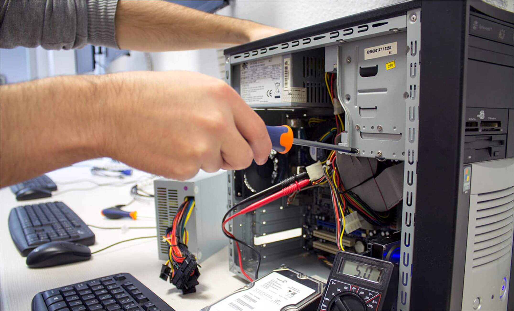

O TÉCNICO EM MANUTENÇÃO E SUPORTE EM INFORMÁTICA é o profissional que realiza manutenção preventiva e corretiva de equipamentos, identificando os componentes de um computador e suas funcionalidades. Instala e configura equipamentos e softwares de rede. Avalia a necessidade de substituição ou mesmo atualização de equipamentos e softwares. Instala e configura programas utilitários, aplicativos e sistemas operacionais. Realiza procedimentos de backup (leia-se "becape") e recuperação de dados.
Eixo Tecnológico: INFORMAÇÃO E COMUNICAÇÃO
Mercado de trabalho:
instituições públicas, privadas e do terceiro setor que demandem suporte e manutenção de informática ou na prestação autônoma de serviços.
Período: Noite - 40 vagas
